|
MODFLOW 6
version 6.4.0
MODFLOW 6 Code Documentation
|
|
MODFLOW 6
version 6.4.0
MODFLOW 6 Code Documentation
|
This module contains the SFR package methods. More...
Data Types | |
| type | sfrtype |
Functions/Subroutines | |
| subroutine, public | sfr_create (packobj, id, ibcnum, inunit, iout, namemodel, pakname) |
| @ brief Create a new package object More... | |
| subroutine | sfr_allocate_scalars (this) |
| @ brief Allocate scalars More... | |
| subroutine | sfr_allocate_arrays (this) |
| @ brief Allocate arrays More... | |
| subroutine | sfr_read_dimensions (this) |
| @ brief Read dimensions for package More... | |
| subroutine | sfr_options (this, option, found) |
| @ brief Read additional options for package More... | |
| subroutine | sfr_ar (this) |
| @ brief Allocate and read method for package More... | |
| subroutine | sfr_read_packagedata (this) |
| @ brief Read packagedata for the package More... | |
| subroutine | sfr_read_crossection (this) |
| @ brief Read crosssection block for the package More... | |
| subroutine | sfr_read_connectiondata (this) |
| @ brief Read connectiondata for the package More... | |
| subroutine | sfr_read_diversions (this) |
| @ brief Read diversions for the package More... | |
| subroutine | sfr_rp (this) |
| @ brief Read and prepare period data for package More... | |
| subroutine | sfr_ad (this) |
| @ brief Advance the package More... | |
| subroutine | sfr_cf (this, reset_mover) |
| @ brief Formulate the package hcof and rhs terms. More... | |
| subroutine | sfr_fc (this, rhs, ia, idxglo, amatsln) |
| @ brief Copy hcof and rhs terms into solution. More... | |
| subroutine | sfr_fn (this, rhs, ia, idxglo, amatsln) |
| @ brief Add Newton-Raphson terms for package into solution. More... | |
| subroutine | sfr_cc (this, innertot, kiter, iend, icnvgmod, cpak, ipak, dpak) |
| @ brief Convergence check for package. More... | |
| subroutine | sfr_cq (this, x, flowja, iadv) |
| @ brief Calculate package flows. More... | |
| subroutine | sfr_ot_package_flows (this, icbcfl, ibudfl) |
| @ brief Output package flow terms. More... | |
| subroutine | sfr_ot_dv (this, idvsave, idvprint) |
| @ brief Output package dependent-variable terms. More... | |
| subroutine | sfr_ot_bdsummary (this, kstp, kper, iout, ibudfl) |
| @ brief Output advanced package budget summary. More... | |
| subroutine | sfr_da (this) |
| @ brief Deallocate package memory More... | |
| subroutine | define_listlabel (this) |
| @ brief Define the list label for the package More... | |
| logical function | sfr_obs_supported (this) |
| Determine if observations are supported. More... | |
| subroutine | sfr_df_obs (this) |
| Define the observation types available in the package. More... | |
| subroutine | sfr_bd_obs (this) |
| Save observations for the package. More... | |
| subroutine | sfr_rp_obs (this) |
| Read and prepare observations for a package. More... | |
| subroutine | sfr_process_obsid (obsrv, dis, inunitobs, iout) |
| Process observation IDs for a package. More... | |
| subroutine | sfr_set_stressperiod (this, n, ichkustrm, crossfile) |
| Set period data. More... | |
| subroutine | sfr_solve (this, n, h, hcof, rhs, update) |
| Solve reach continuity equation. More... | |
| subroutine | sfr_update_flows (this, n, qd, qgwf) |
| Update flow terms. More... | |
| subroutine | sfr_calc_qd (this, n, depth, hgwf, qgwf, qd) |
| Calculate downstream flow term. More... | |
| subroutine | sfr_calc_qsource (this, n, depth, qsrc) |
| Calculate sum of sources. More... | |
| subroutine | sfr_calc_qman (this, n, depth, qman) |
| Calculate streamflow. More... | |
| subroutine | sfr_calc_qgwf (this, n, depth, hgwf, qgwf, gwfhcof, gwfrhs) |
| Calculate reach-aquifer exchange. More... | |
| subroutine | sfr_calc_cond (this, n, depth, cond) |
| Calculate reach-aquifer conductance. More... | |
| subroutine | sfr_calc_div (this, n, i, qd, qdiv) |
| Calculate diversion flow. More... | |
| subroutine | sfr_calc_reach_depth (this, n, q1, d1) |
| Calculate the depth at the midpoint. More... | |
| subroutine | sfr_calc_xs_depth (this, n, qrch, d) |
| Calculate the depth at the midpoint of a irregular cross-section. More... | |
| subroutine | sfr_check_reaches (this) |
| Check reach data. More... | |
| subroutine | sfr_check_connections (this) |
| Check connection data. More... | |
| subroutine | sfr_check_diversions (this) |
| Check diversions data. More... | |
| subroutine | sfr_check_ustrf (this) |
| Check upstream fraction data. More... | |
| subroutine | sfr_setup_budobj (this) |
| Setup budget object for package. More... | |
| subroutine | sfr_fill_budobj (this) |
| Copy flow terms into budget object for package. More... | |
| subroutine | sfr_setup_tableobj (this) |
| Setup stage table object for package. More... | |
| real(dp) function | calc_area_wet (this, n, depth) |
| Calculate wetted area. More... | |
| real(dp) function | calc_perimeter_wet (this, n, depth) |
| Calculate wetted perimeter. More... | |
| real(dp) function | calc_surface_area (this, n) |
| Calculate maximum surface area. More... | |
| real(dp) function | calc_surface_area_wet (this, n, depth) |
| Calculate wetted surface area. More... | |
| real(dp) function | calc_top_width_wet (this, n, depth) |
| Calculate wetted top width. More... | |
| subroutine | sfr_activate_density (this) |
| Activate density terms. More... | |
| subroutine | sfr_calculate_density_exchange (this, n, stage, head, cond, bots, flow, gwfhcof, gwfrhs) |
| Calculate density terms. More... | |
Variables | |
| character(len=lenftype) | ftype = 'SFR' |
| package ftype string More... | |
| character(len=lenpackagename) | text = ' SFR' |
| package budget string More... | |
This module contains the overridden methods for the streamflow routing (SFR) package. Most of the methods in the base Boundary Package are overridden.
|
private |
Function to calculate the wetted area for a SFR package reach.
| this | SfrType object | |
| [in] | n | reach number |
| [in] | depth | reach depth |
Definition at line 5379 of file gwf3sfr8.f90.
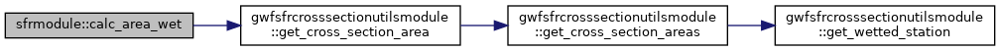
|
private |
Function to calculate the wetted perimeter for a SFR package reach.
| this | SfrType object | |
| [in] | n | reach number |
| [in] | depth | reach depth |
Definition at line 5412 of file gwf3sfr8.f90.
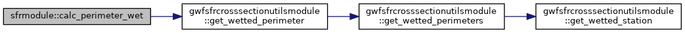
|
private |
Function to calculate the maximum surface area for a SFR package reach.
| this | SfrType object | |
| [in] | n | reach number |
Definition at line 5444 of file gwf3sfr8.f90.
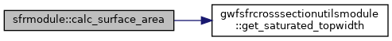
|
private |
Function to calculate the wetted surface area for a SFR package reach.
| this | SfrType object | |
| [in] | n | reach number |
| [in] | depth | reach depth |
Definition at line 5476 of file gwf3sfr8.f90.
|
private |
Function to calculate the wetted top width for a SFR package reach.
| this | SfrType object | |
| [in] | n | reach number |
| [in] | depth | reach depth |
Definition at line 5499 of file gwf3sfr8.f90.
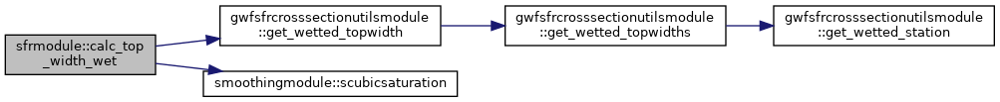
| subroutine sfrmodule::define_listlabel | ( | class(sfrtype), intent(inout) | this | ) |
Method defined the list label for the SFR package. The list label is the heading that is written to iout when PRINT_INPUT option is used.
| [in,out] | this | SfrType object |
Definition at line 2638 of file gwf3sfr8.f90.
|
private |
Method to activate addition of density terms for a SFR package reach.
| [in,out] | this | SfrType object |
Definition at line 5535 of file gwf3sfr8.f90.
| subroutine sfrmodule::sfr_ad | ( | class(sfrtype) | this | ) |
Advance data in the SFR package. The method sets advances time series, time array series, and observation data.
| this | SfrType object |
Definition at line 1834 of file gwf3sfr8.f90.
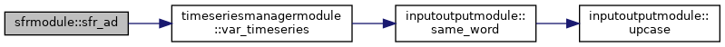
| subroutine sfrmodule::sfr_allocate_arrays | ( | class(sfrtype), intent(inout) | this | ) |
Allocate and initialize array for the SFR package.
| [in,out] | this | SfrType object |
Definition at line 332 of file gwf3sfr8.f90.
| subroutine sfrmodule::sfr_allocate_scalars | ( | class(sfrtype), intent(inout) | this | ) |
Allocate and initialize scalars for the SFR package. The base model allocate scalars method is also called.
| [in,out] | this | SfrType object |
Definition at line 268 of file gwf3sfr8.f90.
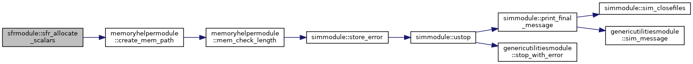
| subroutine sfrmodule::sfr_ar | ( | class(sfrtype), intent(inout) | this | ) |
Method to read and prepare period data for the SFR package.
| [in,out] | this | SfrType object |
Definition at line 740 of file gwf3sfr8.f90.
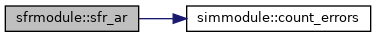
|
private |
Method to save simulated values for the SFR package.
| this | SfrType object |
Definition at line 2792 of file gwf3sfr8.f90.
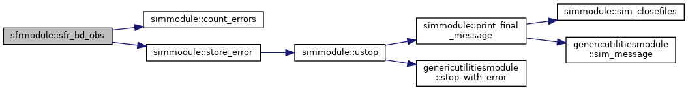
|
private |
Method to calculate the reach-aquifer conductance for a SFR package reach.
| this | SfrType object | |
| [in] | n | reach number |
| [in] | depth | reach depth |
| [in,out] | cond | reach-aquifer conductance |
Definition at line 3991 of file gwf3sfr8.f90.
|
private |
Method to calculate the diversion flow for a diversion connected to a SFR package reach. The downstream flow for a reach is passed in and adjusted by the diversion flow amount calculated in this method.
| this | SfrType object | |
| [in] | n | reach number |
| [in] | i | diversion number in reach |
| [in,out] | qd | remaining downstream flow for reach |
| [in,out] | qdiv | diversion flow for diversion i |
Definition at line 4026 of file gwf3sfr8.f90.
|
private |
Method to calculate downstream flow for a SFR package reach.
| this | SfrType object | |
| [in] | n | reach number |
| [in] | depth | reach depth |
| [in] | hgwf | groundwater head in connected GWF cell |
| [in,out] | qgwf | groundwater leakage for reach |
| [in,out] | qd | residual |
Definition at line 3742 of file gwf3sfr8.f90.
|
private |
Method to calculate the reach-aquifer exchange for a SFR package reach. The reach-aquifer exchange is relative to the reach. Calculated flow is positive if flow is from the aquifer to the reach.
| this | SfrType object | |
| [in] | n | reach number |
| [in] | depth | reach depth |
| [in] | hgwf | head in GWF cell connected to reach |
| [in,out] | qgwf | reach-aquifer exchange |
| [in,out] | gwfhcof | diagonal coefficient term for reach |
| [in,out] | gwfrhs | right-hand side term for reach |
Definition at line 3923 of file gwf3sfr8.f90.
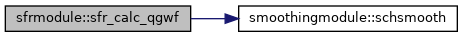
|
private |
Method to calculate the streamflow using Manning's equation for a SFR package reach.
| this | SfrType object | |
| [in] | n | reach number |
| [in] | depth | reach depth |
| [in,out] | qman | streamflow |
Definition at line 3848 of file gwf3sfr8.f90.
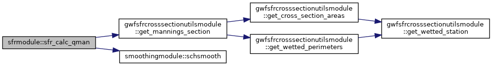
|
private |
Method to calculate the sum of sources for reach, excluding reach leakage, for a SFR package reach.
| this | SfrType object | |
| [in] | n | reach number |
| [in] | depth | reach depth |
| [in,out] | qsrc | sum of sources for reach |
Definition at line 3779 of file gwf3sfr8.f90.
|
private |
Method to calculate the depth at the midpoint of a reach.
| this | SfrType object | |
| [in] | n | reach number |
| [in] | q1 | streamflow |
| [in,out] | d1 | stream depth at midpoint of reach |
Definition at line 4085 of file gwf3sfr8.f90.
|
private |
Method to calculate the depth at the midpoint of a reach with a irregular cross-section using Newton-Raphson.
| this | SfrType object | |
| [in] | n | reach number |
| [in] | qrch | streamflow |
| [in,out] | d | stream depth at midpoint of reach |
Definition at line 4125 of file gwf3sfr8.f90.
| subroutine sfrmodule::sfr_calculate_density_exchange | ( | class(sfrtype), intent(inout) | this, |
| integer(i4b), intent(in) | n, | ||
| real(dp), intent(in) | stage, | ||
| real(dp), intent(in) | head, | ||
| real(dp), intent(in) | cond, | ||
| real(dp), intent(in) | bots, | ||
| real(dp), intent(inout) | flow, | ||
| real(dp), intent(inout) | gwfhcof, | ||
| real(dp), intent(inout) | gwfrhs | ||
| ) |
Method to galculate groundwater-reach density exchange terms for a SFR package reach.
Member variable used here denseterms : shape (3, MAXBOUND), filled by buoyancy package col 1 is relative density of sfr (densesfr / denseref) col 2 is relative density of gwf cell (densegwf / denseref) col 3 is elevation of gwf cell
| [in,out] | this | SfrType object |
| [in] | n | reach number |
| [in] | stage | reach stage |
| [in] | head | head in connected GWF cell |
| [in] | cond | reach conductance |
| [in] | bots | bottom elevation of reach |
| [in,out] | flow | calculated flow, updated here with density terms |
| [in,out] | gwfhcof | GWF diagonal coefficient, updated here with density terms |
| [in,out] | gwfrhs | GWF right-hand-side value, updated here with density terms |
Definition at line 5573 of file gwf3sfr8.f90.
|
private |
Perform additional convergence checks on the flow between the SFR package and the model it is attached to.
| [in,out] | this | SfrType object |
| [in] | innertot | total number of inner iterations |
| [in] | kiter | Picard iteration number |
| [in] | iend | flag indicating if this is the last Picard iteration |
| [in] | icnvgmod | flag inficating if the model has met specific convergence criteria |
| [in,out] | cpak | string for user node |
| [in,out] | ipak | location of the maximum dependent variable change |
| [in,out] | dpak | maximum dependent variable change |
Definition at line 2096 of file gwf3sfr8.f90.
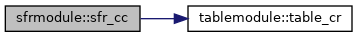
| subroutine sfrmodule::sfr_cf | ( | class(sfrtype) | this, |
| logical(lgp), intent(in), optional | reset_mover | ||
| ) |
Formulate the hcof and rhs terms for the WEL package that will be added to the coefficient matrix and right-hand side vector.
| this | SfrType object | |
| [in] | reset_mover | boolean for resetting mover |
Definition at line 1897 of file gwf3sfr8.f90.
|
private |
Method to check connection data for a SFR package. This method also creates the tables used to print input data, if this option in enabled in the SFR package.
| this | SfrType object |
Definition at line 4302 of file gwf3sfr8.f90.
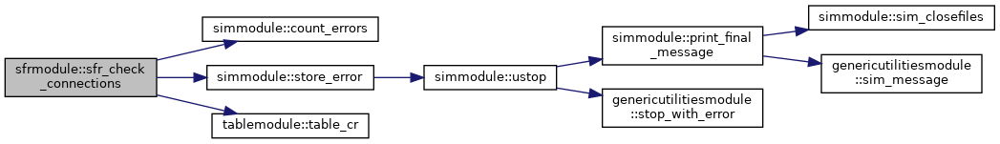
|
private |
Method to check diversion data for a SFR package. This method also creates the tables used to print input data, if this option in enabled in the SFR package.
| this | SfrType object |
Definition at line 4584 of file gwf3sfr8.f90.
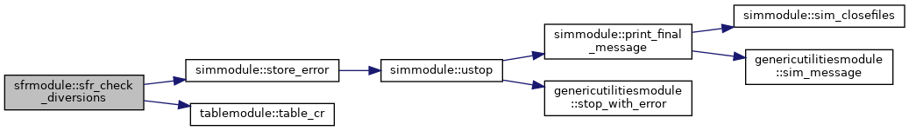
|
private |
Method to check specified data for a SFR package. This method also creates the tables used to print input data, if this option in enabled in the SFR package.
| this | SfrType object |
Definition at line 4179 of file gwf3sfr8.f90.
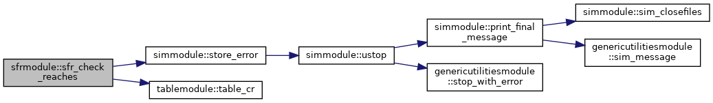
|
private |
Method to check upstream fraction data for a SFR package. This method also creates the tables used to print input data, if this option in enabled in the SFR package.
| this | SfrType object |
Definition at line 4695 of file gwf3sfr8.f90.
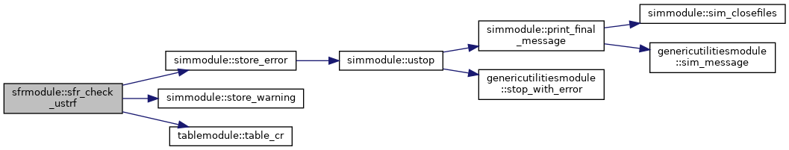
| subroutine sfrmodule::sfr_cq | ( | class(sfrtype), intent(inout) | this, |
| real(dp), dimension(:), intent(in) | x, | ||
| real(dp), dimension(:), intent(inout), contiguous | flowja, | ||
| integer(i4b), intent(in), optional | iadv | ||
| ) |
Calculate the flow between connected SFR package control volumes.
| [in,out] | this | SfrType object |
| [in] | x | current dependent-variable value |
| [in,out] | flowja | flow between two connected control volumes |
| [in] | iadv | flag that indicates if this is an advance package |
Definition at line 2253 of file gwf3sfr8.f90.
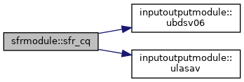
| subroutine, public sfrmodule::sfr_create | ( | class(bndtype), pointer | packobj, |
| integer(i4b), intent(in) | id, | ||
| integer(i4b), intent(in) | ibcnum, | ||
| integer(i4b), intent(in) | inunit, | ||
| integer(i4b), intent(in) | iout, | ||
| character(len=*), intent(in) | namemodel, | ||
| character(len=*), intent(in) | pakname | ||
| ) |
Create a new SFR Package object
| packobj | pointer to default package type | |
| [in] | id | package id |
| [in] | ibcnum | boundary condition number |
| [in] | inunit | unit number of SFR package input file |
| [in] | iout | unit number of model listing file |
| [in] | namemodel | model name |
| [in] | pakname | package name |
Definition at line 221 of file gwf3sfr8.f90.
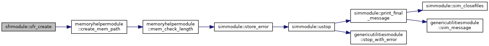
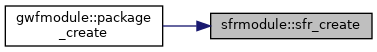
| subroutine sfrmodule::sfr_da | ( | class(sfrtype) | this | ) |
Deallocate SFR package scalars and arrays.
| this | SfrType object |
Definition at line 2511 of file gwf3sfr8.f90.
|
private |
Method to define the observation types available in the SFR package.
| this | SfrType object |
Definition at line 2691 of file gwf3sfr8.f90.
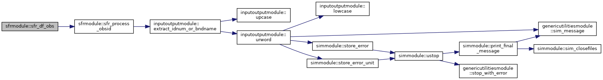
|
private |
Add the hcof and rhs terms for the SFR package to the coefficient matrix and right-hand side vector.
| this | SfrType object | |
| [in,out] | rhs | right-hand side vector for model |
| [in] | ia | solution CRS row pointers |
| [in] | idxglo | mapping vector for model (local) to solution (global) |
| [in,out] | amatsln | solution coefficient matrix |
Definition at line 1938 of file gwf3sfr8.f90.
|
private |
Method to copy flows into the budget object that stores all the sfr flows The terms listed here must correspond in number and order to the ones added in the sfr_setup_budobj method.
| this | SfrType object |
Definition at line 5121 of file gwf3sfr8.f90.
|
private |
Calculate and add the Newton-Raphson terms for the SFR package to the coefficient matrix and right-hand side vector.
| this | SfrType object | |
| [in,out] | rhs | right-hand side vector for model |
| [in] | ia | solution CRS row pointers |
| [in] | idxglo | mapping vector for model (local) to solution (global) |
| [in,out] | amatsln | solution coefficient matrix |
Definition at line 2042 of file gwf3sfr8.f90.
|
private |
Function to determine if observations are supported by the SFR package. Observations are supported by the SFR package.
| this | SfrType object |
Definition at line 2674 of file gwf3sfr8.f90.
|
private |
Read additional options for SFR package.
| [in,out] | this | SfrType object |
| [in,out] | option | option keyword string |
| [in,out] | found | boolean indicating if option found |
Definition at line 595 of file gwf3sfr8.f90.
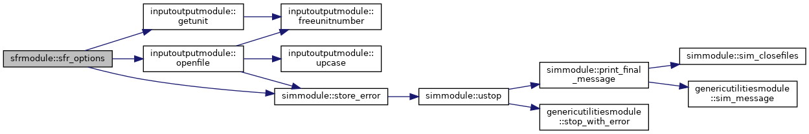
| subroutine sfrmodule::sfr_ot_bdsummary | ( | class(sfrtype) | this, |
| integer(i4b), intent(in) | kstp, | ||
| integer(i4b), intent(in) | kper, | ||
| integer(i4b), intent(in) | iout, | ||
| integer(i4b), intent(in) | ibudfl | ||
| ) |
Output SFR package budget summary.
| this | SfrType object | |
| [in] | kstp | time step number |
| [in] | kper | period number |
| [in] | iout | flag and unit number for the model listing file |
| [in] | ibudfl | flag indicating budget should be written |
Definition at line 2490 of file gwf3sfr8.f90.
| subroutine sfrmodule::sfr_ot_dv | ( | class(sfrtype) | this, |
| integer(i4b), intent(in) | idvsave, | ||
| integer(i4b), intent(in) | idvprint | ||
| ) |
Output SFR boundary package dependent-variable terms.
| this | SfrType object | |
| [in] | idvsave | flag and unit number for dependent-variable output |
| [in] | idvprint | flag indicating if dependent-variable should be written to the model listing file |
Definition at line 2389 of file gwf3sfr8.f90.
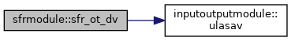
| subroutine sfrmodule::sfr_ot_package_flows | ( | class(sfrtype) | this, |
| integer(i4b), intent(in) | icbcfl, | ||
| integer(i4b), intent(in) | ibudfl | ||
| ) |
Output SFR package flow terms.
| this | SfrType object | |
| [in] | icbcfl | flag and unit number for cell-by-cell output |
| [in] | ibudfl | flag indication if cell-by-cell data should be saved |
Definition at line 2332 of file gwf3sfr8.f90.
| subroutine sfrmodule::sfr_process_obsid | ( | type(observetype), intent(inout) | obsrv, |
| class(disbasetype), intent(in) | dis, | ||
| integer(i4b), intent(in) | inunitobs, | ||
| integer(i4b), intent(in) | iout | ||
| ) |
Method to process observation ID strings for a SFR package.
| [in,out] | obsrv | Observation object |
| [in] | dis | Discretization object |
| [in] | inunitobs | file unit number for the package observation file |
| [in] | iout | model listing file unit number |
Definition at line 2998 of file gwf3sfr8.f90.
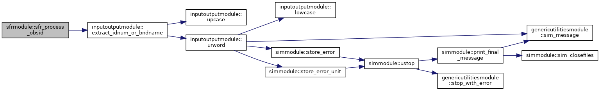
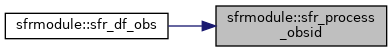
| subroutine sfrmodule::sfr_read_connectiondata | ( | class(sfrtype), intent(inout) | this | ) |
Method to read connectiondata for each reach for the SFR package.
| [in,out] | this | SfrType object |
Definition at line 1167 of file gwf3sfr8.f90.
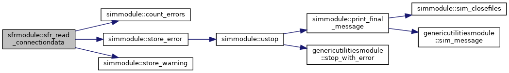
| subroutine sfrmodule::sfr_read_crossection | ( | class(sfrtype), intent(inout) | this | ) |
Method to read crosssection data for the SFR package.
| [in,out] | this | SfrType object |
Definition at line 1028 of file gwf3sfr8.f90.
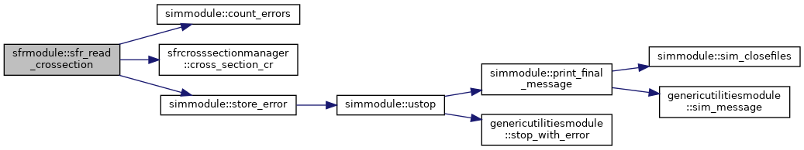
| subroutine sfrmodule::sfr_read_dimensions | ( | class(sfrtype), intent(inout) | this | ) |
Read dimensions for the SFR package.
| [in,out] | this | SfrType object |
Definition at line 506 of file gwf3sfr8.f90.
| subroutine sfrmodule::sfr_read_diversions | ( | class(sfrtype), intent(inout) | this | ) |
Method to read diversions for the SFR package.
| [in,out] | this | SfrType object |
Definition at line 1449 of file gwf3sfr8.f90.
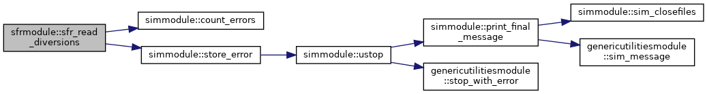
|
private |
Method to read packagedata for each reach for the SFR package.
| [in,out] | this | SfrType object |
Definition at line 797 of file gwf3sfr8.f90.
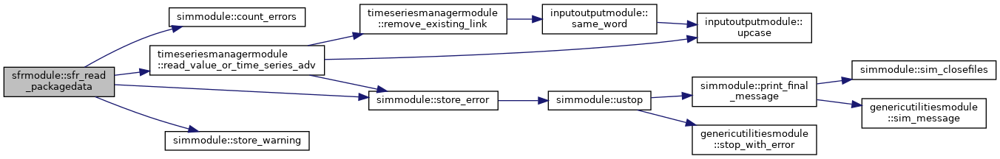
| subroutine sfrmodule::sfr_rp | ( | class(sfrtype), intent(inout) | this | ) |
Method to read and prepare period data for the SFR package.
| [in,out] | this | SfrType object |
Definition at line 1652 of file gwf3sfr8.f90.
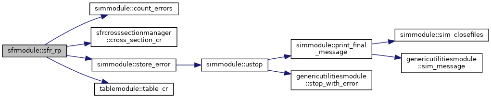
|
private |
Method to read and prepare observations for a SFR package.
| [in,out] | this | SfrType object |
Definition at line 2885 of file gwf3sfr8.f90.
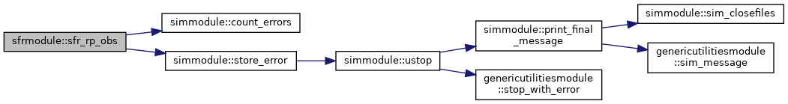
|
private |
Method to read and set period data for a SFR package reach.
| [in,out] | this | SfrType object |
| [in] | n | reach number |
| [in,out] | ichkustrm | flag indicating if upstream fraction data specified |
| [in,out] | crossfile | cross-section file name |
Definition at line 3042 of file gwf3sfr8.f90.
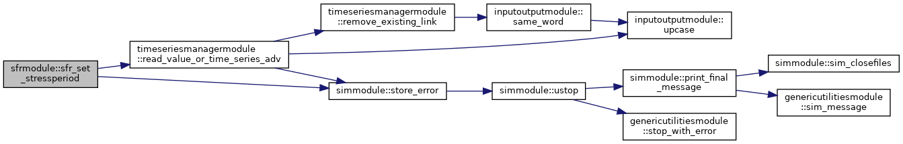
|
private |
Method to set up the budget object that stores all the sfr flows The terms listed here must correspond in number and order to the ones listed in the sfr_fill_budobj method.
| this | SfrType object |
Definition at line 4902 of file gwf3sfr8.f90.
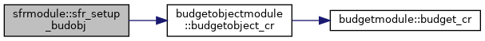
|
private |
Method to set up the table object that is used to write the sfr stage data. The terms listed here must correspond in number and order to the ones written to the stage table in the sfr_ot method.
| this | SfrType object |
Definition at line 5299 of file gwf3sfr8.f90.
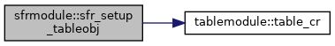
| subroutine sfrmodule::sfr_solve | ( | class(sfrtype) | this, |
| integer(i4b), intent(in) | n, | ||
| real(dp), intent(in) | h, | ||
| real(dp), intent(inout) | hcof, | ||
| real(dp), intent(inout) | rhs, | ||
| logical(lgp), intent(in), optional | update | ||
| ) |
Method to solve the continuity equation for a SFR package reach.
| this | SfrType object | |
| [in] | n | reach number |
| [in] | h | groundwater head in cell connected to reach |
| [in,out] | hcof | coefficient term added to the diagonal |
| [in,out] | rhs | right-hand side term |
| [in] | update | boolean indicating if the reach depth and stage variables should be updated to current iterate |
Definition at line 3228 of file gwf3sfr8.f90.
|
private |
Method to update downstream flow and groundwater leakage terms for a SFR package reach.
| [in,out] | this | SfrType object |
| [in] | n | reach number |
| [in,out] | qd | downstream reach flow |
| [in] | qgwf | groundwater leakage for reach |
Definition at line 3674 of file gwf3sfr8.f90.
| character(len=lenftype) sfrmodule::ftype = 'SFR' |
Definition at line 43 of file gwf3sfr8.f90.
| character(len=lenpackagename) sfrmodule::text = ' SFR' |
Definition at line 44 of file gwf3sfr8.f90.
 1.8.17
1.8.17